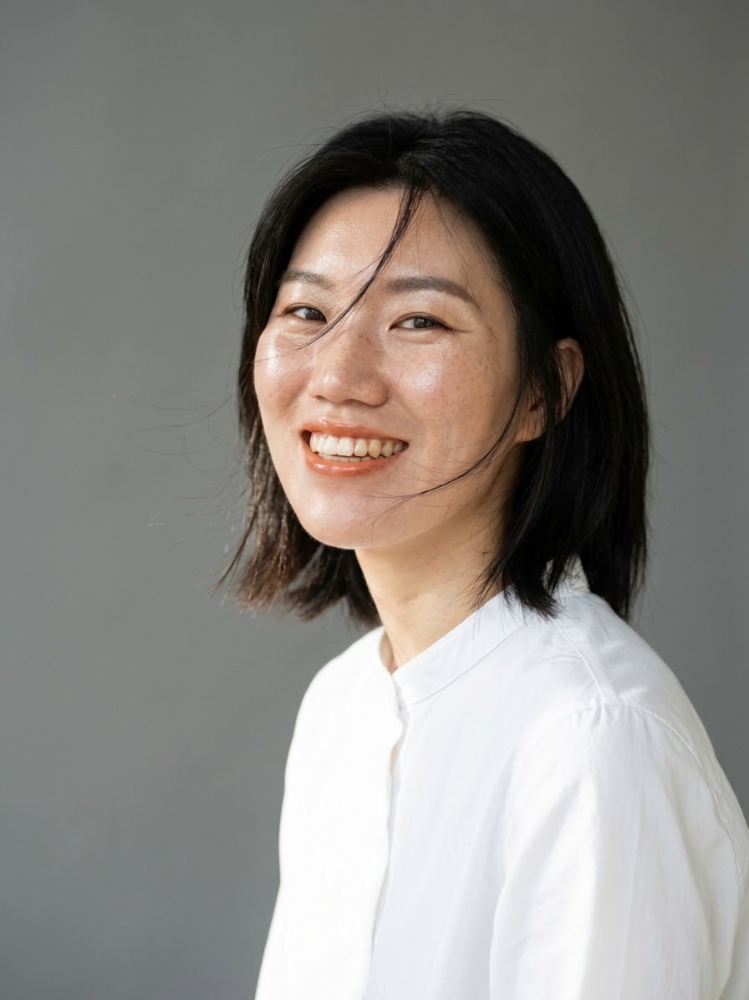
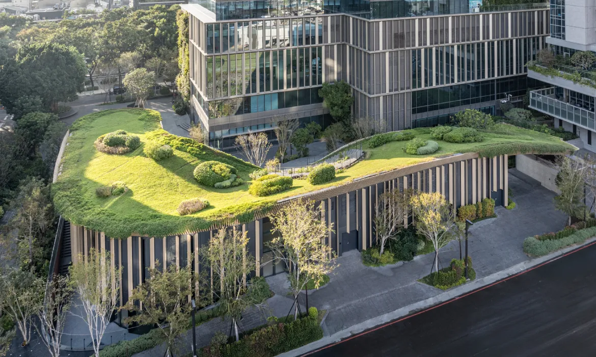
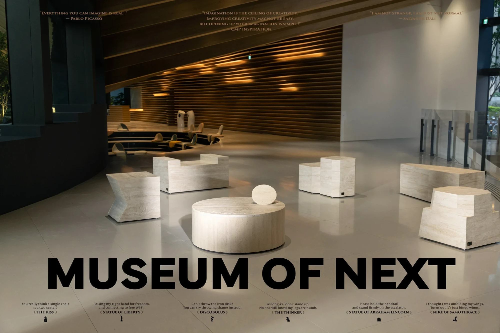
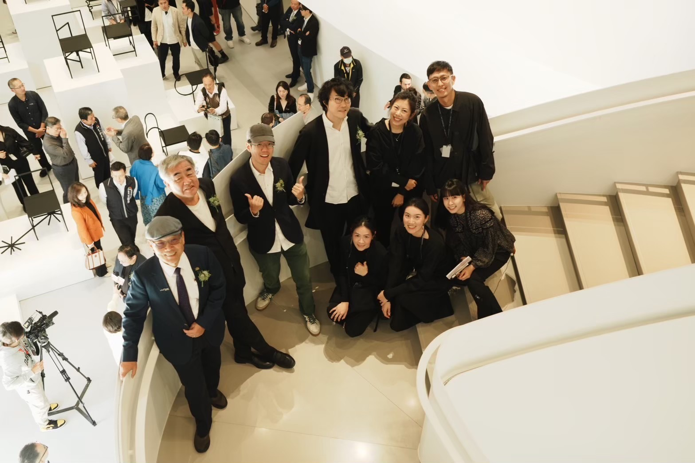
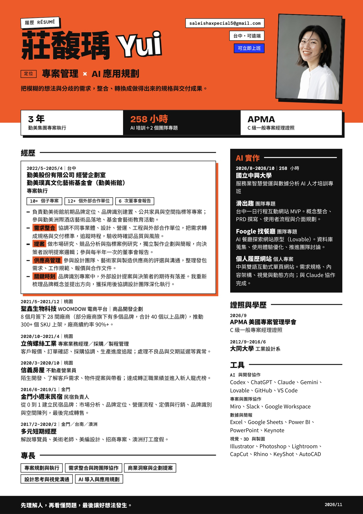

思考方式
從人的感受找到真正的問題
面對新領域，我先快速建立整體認知，再用架構整理資訊。比起立刻接受表面的答案，我更在意問題有沒有被正確理解。
Hello，我是 Yui！
定位
把模糊的想法與分歧的需求，整合、轉換成做得出來的規格與交付成果。

每個角色在意的事
共同目標與優先順序
做得出來的交付成果
我是莊馥瑀 Yui，對人的感受保持敏銳、喜歡追問根本，也享受將想法推進成成果的跨領域專案工作者。
思考方式
面對新領域，我先快速建立整體認知，再用架構整理資訊。比起立刻接受表面的答案，我更在意問題有沒有被正確理解。
合作方式
討論停滯時，我先釐清問題、理解不同角色在意的事，再整理彼此觀點，找出兼顧目標與執行條件的共同方向。
執行標準
我主動整理內容邏輯與資訊層級，在創意、可行性與品質之間取得平衡，確保成果符合目標與交付要求。
成長方式
進入新領域，我主動研究、參考實際案例、動手驗證，並用 AI 工具提升學習與分析的效率。
258 小時的 AI 培訓、一張專案管理證照，和三個實作專案。
台中一日行程互動網站 MVP
與團隊完成可操作的網站 MVP。
AI 餐廳探索網站原型
中英雙語的互動式單頁網站，也就是您現在看到的這一頁。

負責勤美術館前期品牌定位、品牌識別建置、公共家具與空間指標等專案；並參與勤美洲際酒店藝術品落地、基金會藝術教育活動。
需求整合、跨部門協調、供應商管理。這三件事，也是 AI 導入專案最需要的。
商業洞察・提案
做市場研究、競品分析與指標案例研究。獨立製作專案企劃與簡報，向決策者說明提案邏輯與執行方式。整理專案進度，參與每半年一次的董事會報告。
需求整合・跨部門協調
協調不同事業體、設計、營運、工程與外部合作單位。把各單位的需求轉成規格與交付標準，追蹤時程與待辦，驗收時確認成果品質與風險。擔任公共家具與空間指標專案窗口。
供應商管理
參與設計團隊、藝術家、物料及製造供應商的開發、評選與溝通。整理發包需求、工作規範、報價與合作文件，追蹤供應商進度與產出品質。

外部設計提案與決策者的期待有落差。我重新梳理品牌概念並提出方向，獲決策者採用後，再協調設計團隊深化執行。

三年，在勤美術館做品牌定位、識別建置、公共家具與空間指標。
也參與
國立中興大學 2026
258小時
服務業智慧營運與數據分析 AI 人才培訓專班
2個
團隊專題：滑出趣、Foogle 找餐廳
2022/5–2025/4
依 2022/5–2025/3 的工作紀錄統計。
3年
專案執行
10+個
子專案
12+個
外部合作單位
6次
董事會報告
WOOMDOW 電商平台｜2021/5–2021/12
部分廠商旗下有多個品牌，合計建立 40 個以上品牌的合作關係。
28間
廠商簽約
300+個
SKU 上架
90%+
廠商續約率
由新到舊
跨領域專案執行出身，正在往 AI 導入與軟體專案走。
我一直在找能整合人、流程與工具的位置，AI 導入正好是這三者的交集。
2026/9
C 級一般專案經理證照
2026/8–2026/10258 小時
服務業智慧營運與數據分析 AI 人才培訓專班
團隊專題：滑出趣、Foogle 找餐廳
2022/5–2025/4台中
專案執行
勤美術館前期品牌定位、品牌識別建置、公共家具與空間指標等專案。
2021/5–2021/12桃園
WOOMDOW 電商平台
商品開發企劃
8 個月簽下 28 間廠商
品牌與供應商開發、商品上架、廠商關係維護，並參與商品組合、定價策略與檔期活動。
2020/10–2021/4桃園
專案業務經理／採購／製程管理
客戶報價、訂單確認、採購協調、生產進度追蹤；處理不良品與交期延遲等異常。
2020/3–2020/10桃園
不動產營業員
陌生開發、了解客戶需求、物件提案與帶看；達成轉正職業績並進入新人龍虎榜。
2016–2020｜兩條線並行
2017/2–2020/2金門／台南／澳洲
2016/6–2019/1金門
民宿負責人
從 0 到 1，再到轉售
2012/9–2016/6
工業設計系
能力與工具
釐清目標、範圍、限制與交付需求，追蹤時程、進度與品質。整合內外部資源與供應商，製作提案、進度報告與決策簡報。
整理不同角色的需求與限制，找出共同目標與優先順序。把模糊或分歧的意見轉成清楚的方向、工作項目與交付標準。
做市場研究、競品分析與案例整理，把抽象概念轉成有說服力的企劃與簡報。
從人的感受與使用情境出發，把複雜資訊整理成清楚的架構。具備平面設計、影像處理、3D 建模與基礎工程製圖能力。
盤點流程與痛點，評估生成式 AI 工具與自動化方案，規劃導入步驟。有美術教學與導覽解說經驗，能把 AI 工具的用法轉成好懂的教育訓練內容。
期待有機會聊聊，謝謝您！
需要 PDF 檔，歡迎來信，我直接寄給您。
